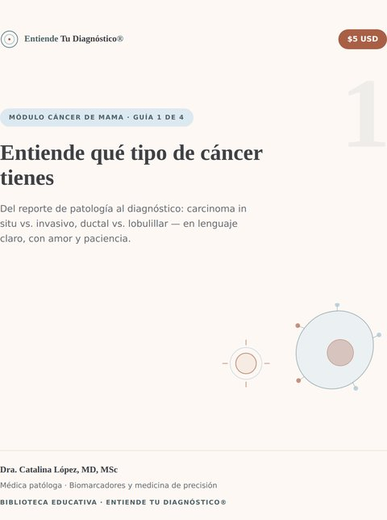
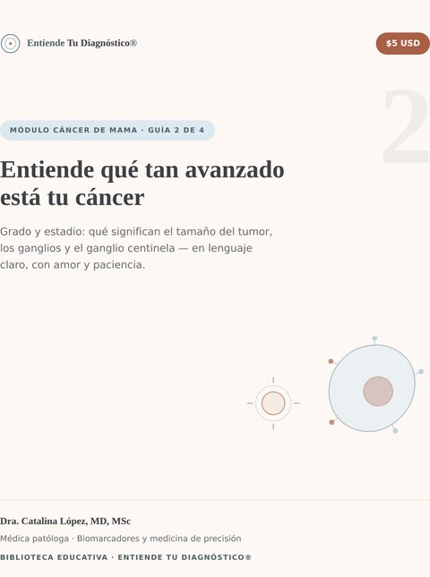
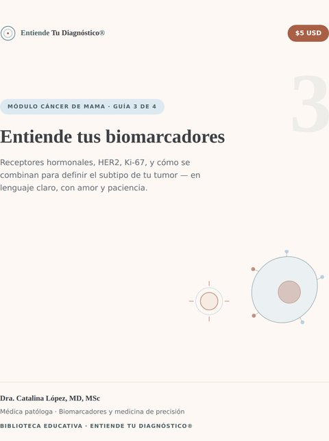
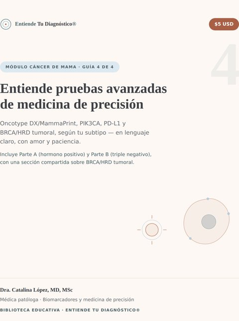

Módulo: Cáncer de Mama
Disponible en español e inglés4 guías independientes que acompañan a la paciente y su familia desde el momento del diagnóstico hasta las pruebas moleculares más avanzadas — en lenguaje claro, con amor y paciencia, y siempre referenciadas con fuentes científicas. Compra solo la que necesitas.

Guía 1 — Qué tipo de cáncer tienes
Del reporte de patología al diagnóstico: carcinoma in situ vs. invasivo, ductal vs. lobulillar.
$5 USD
Comprar →

Guía 2 — Qué tan avanzado está
Grado y estadio: qué significan el tamaño del tumor, los ganglios y el ganglio centinela.
$5 USD
Comprar →

Guía 3 — Tus biomarcadores
Receptores hormonales, HER2, Ki-67, y cómo se combinan para definir el subtipo de tu tumor.
$5 USD
Comprar →

Guía 4 — Pruebas avanzadas de precisión
Oncotype DX/MammaPrint, PIK3CA, PD-L1 y BRCA/HRD tumoral, según tu subtipo.
$5 USD
Comprar →